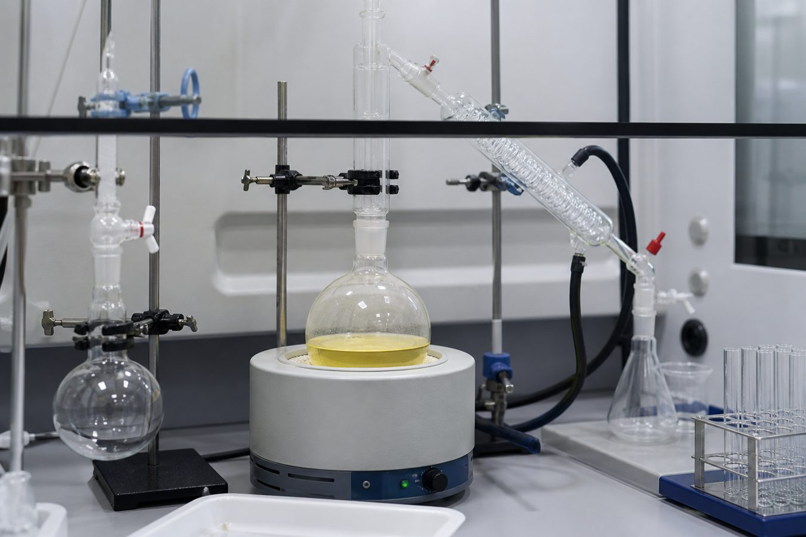

Services
Custom synthesis, analytical work, and compound management
TimTec supports screening laboratories with organic synthesis, quality control, library reformatting, and multi-supplier intake. Work is quoted from a written project plan. Inquiries are treated as confidential.

Services list
Nine laboratory functions that can be quoted separately or as one project.
-
01 Custom synthesis
Milligram to kilogram organic synthesis, intermediates, and active substances under cGMP when the project plan requires it.
-
02 Quality control
Structure and purity by NMR and mass spectrometry. Stock compounds: typical average 95%, minimum 90%. 1H-NMR on request.
-
03 Analytical services
HPLC method development, validation, and stability testing for finished products and raw materials.
-
04 NMR services
Confirmation of customer or vendor samples. Capacity 5,000–10,000 spectra per month on six instruments (300–500 MHz). Printable files and FIDs.
-
05 Weighing and plating
Dry or DMSO samples from a few vials to high throughput. 96- and 384-well plates, mother/daughter sets, and 2-D barcoded tubes.
-
06 Liquid handling
Tecan Freedom systems, 100 nL–5,000 µL. Typically 1.5 minutes to replicate a 96-well plate and under 5 minutes for a 384-well plate.
-
07 Multi-supplier acquisition
Order, receive, QC, repackage, and deliver multi-source compounds in one format, with customer database files.
-
08 Storage and shipping
Short- and long-term chemical storage. Dry-ice domestic and international shipments of plates and vials.
-
09 Cheminformatics
Diversity analysis, LogP, aqueous solubility (LogSw), absorption (FA), Lipinski filters, and database conversion (SDF / SMILES / MOL).
How a project runs
A typical sequence from the first inquiry to shipment. Steps are combined or omitted when the work is plating-only or QC-only.
-
1
Inquire
Structure, amount, and delivery format
-
2
Plan
Written quote and timeline
-
3
Make or source
Synthesis or multi-vendor purchase
-
4
QC
NMR, MS, and/or HPLC
-
5
Format
Vial, 96-well, or 384-well
-
6
Ship
Dry ice when the format requires it
Custom synthesis
TimTec quotes organic synthesis from milligram to kilogram scale, including intermediates and, when the written project plan requires it, active substances under cGMP. The route, scale, and purity target are reviewed before a timeline is given. Scale-up is scoped after that review rather than promised in advance.
Inquiries are treated as confidential. Send a structure file and the required amount to timtec@timtec.org.
Weighing, plating, and library reformatting
Existing collections can be reformatted for screening: dry weigh-out (typically 0.10–10 mg), DMSO solutions at a stated concentration, transfer from older vessels into robot-ready vials or plates, chemically resistant barcoded labels, and an electronic inventory of plate or well, amount, solvent, and structure when the work is not under a CDA.
Data are returned as spreadsheets or SD files. One-off jobs and ongoing monthly support are both quoted. Dissolved samples are stored cold and can be shipped overnight on dry ice.
Analytical and NMR support
HPLC method development and validation, finished-product and raw-material testing, and stability studies are performed in an FDA- and DEA-registered laboratory. NMR confirmation is available for samples from a customer bank or from other vendors, at a capacity of 5,000–10,000 spectra per month on instruments in the 300–500 MHz range.
Stock compounds are checked on a rotating schedule for stability. Spectra can be supplied as printable files or FIDs with assignment.
Compound management and acquisition
When a screen needs compounds from several suppliers, TimTec can place the orders, receive and inspect shipments, spot-check identity and quantity by NMR, repackage into one vial or plate format, apply customer or sequential barcodes, and deliver a single database file (SD or a customer-specified format).
Computational add-ons include diversity comparison, lipophilicity (LogP), aqueous solubility (LogSw), and absorption (FA) estimates. Related desktop software is offered separately at ChemDBsoft.com.
Request a quote
Email a structure file and the required amount for synthesis, plating, NMR, or compound management. Include scale, purity target, and any formatting constraints (vial, 96-well, 384-well, DMSO concentration).
Email timtec@timtec.org Contact page
TimTec LLC
1950 East Irlo Bronson Memorial Highway, Suite 301
Kissimmee, Florida 34744, USA
Phone 302-292-8500